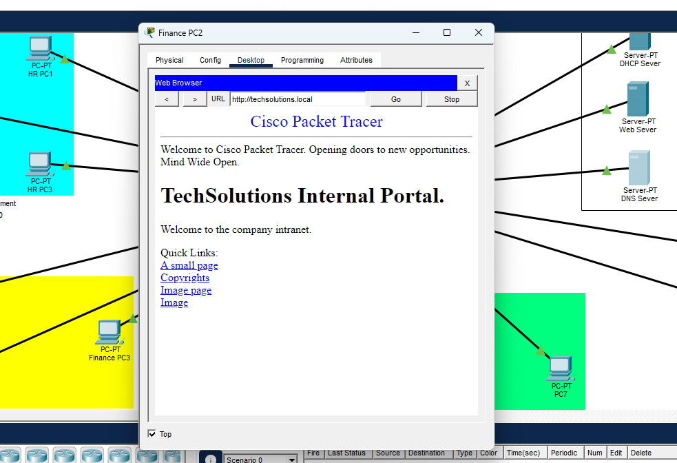

VLANs
Separate network groups into logical broadcast domains.
A practical network-design lab exploring segmentation, inter-VLAN connectivity, infrastructure services and access control.
This Packet Tracer lab models an enterprise-style office network with multiple VLANs and shared network services. The focus is on understanding how logical segmentation, routing and access controls work together in a small business environment.
The lab brings networking concepts into a practical topology rather than treating each protocol or configuration as an isolated exercise.
Separate network groups into logical broadcast domains.
Use router-on-a-stick to provide communication between VLANs.
Configure DHCP, DNS and web services within the lab environment.
The important learning outcome is understanding how network components depend on one another. A host can have a valid address and still fail to communicate because of VLAN membership, trunk configuration, routing, gateway settings or filtering rules.
ACLs add a security dimension: connectivity should be intentional, not simply unrestricted.
Use your actual Packet Tracer file and verification results to demonstrate the topology. Good evidence includes successful DHCP leases, inter-VLAN reachability where permitted, DNS resolution, web access, SSH management and ACL tests showing both allowed and blocked traffic.

| Test Case | Target / Scope | Verification Method | Status |
|---|---|---|---|
| VLAN Segmentation | VLANs 10, 20, 30, 40, 50 | Verified switchport assignments & 802.1Q trunk status | PASS |
| DHCP Lease Assignment | 192.168.50.2 (via ip helper-address) | Requested dynamic IPv4 addresses across client VLANs | PASS |
| DNS Hostname Resolution | 192.168.50.3 | Resolved internal domain names from department hosts | PASS |
| Internal Web Access | 192.168.50.4 (HTTP) | Loaded internal company portal via Packet Tracer browser | PASS |
| SSH Remote Management | 192.168.30.2 (IT VLAN 30) | Authenticated encrypted CLI session from IT admin host | PASS |
| Extended ACL & Port Security | Guest VLAN 40 & unused ports | Confirmed blocked unauthorized traffic & disabled unused ports | PASS |
